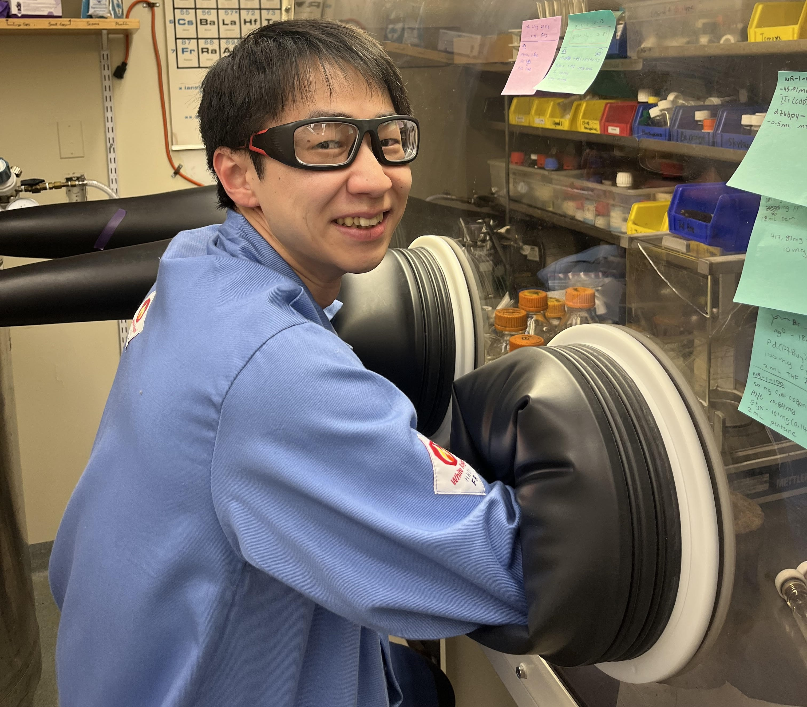

About Me
Tomoya was born and raised in Hyogo, Japan, in 1998. After obtaining his bachelor's degree at Kyoto University, he is now pursuing his doctoral studies at Boston College. Looking ahead, his career goal is to establish his own research lab as a professor and to develop novel chemical methodologies that contribute to a more sustainable future.
